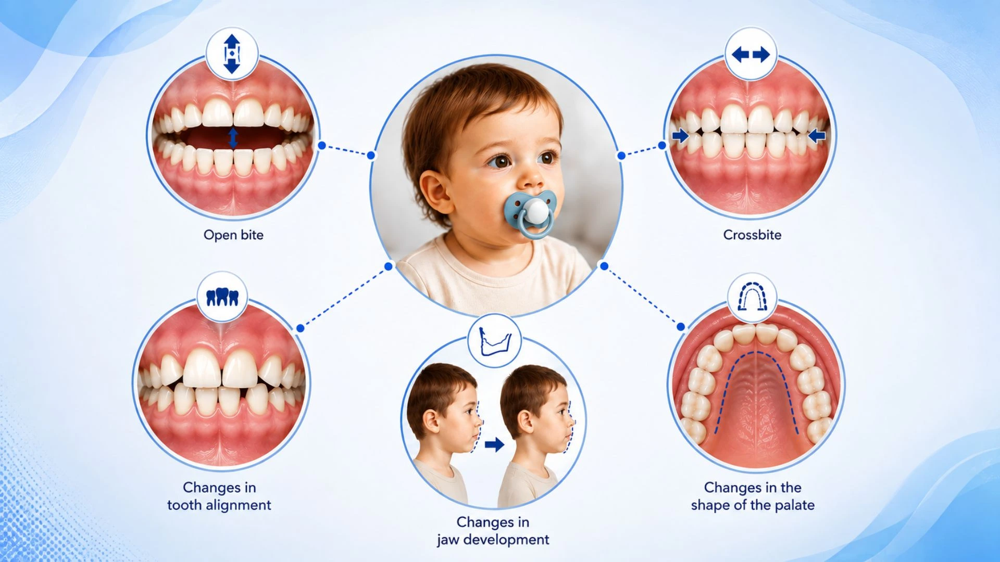

Introduction
One tiny pacifier can mean a lot to a baby—and a lot of relief for parents.
Pacifiers can soothe a fussy baby, satisfy the natural sucking reflex, and help some babies settle to sleep. But as your baby grows, an important question comes up: When does a comforting habit start affecting their teeth?
The benefits and potential risks of pacifier use depend on your child’s age, how often they use it, and how long the habit continues.
Here’s what parents need to know about pacifiers, their effects on teeth, and when it’s time to stop.
What Is a Baby Pacifier?
A baby pacifier is a small, nipple-shaped device that babies suck on for comfort rather than feeding. It typically has three parts: a nipple, shield, and handle. It may also be called a binky, dummy, or soother.
When choosing a pacifier for your baby:
- Select an age-appropriate size.
- Choose a one-piece pacifier that meets recognized safety standards.
- Check it regularly for cracks, tears, or other damage, and replace it if needed.
- Avoid attaching it to your baby with cords or straps that could pose a safety risk.
A pacifier can be a useful soothing tool during infancy, but its use should gradually decrease as your child gets older.
Benefits of Using a Pacifier
For breastfed babies, consider introducing a pacifier once breastfeeding is well established. If your baby refuses a pacifier, do not force it. Pacifiers can offer several benefits during infancy when used appropriately:
1. Helps Soothe a Fussy Baby
Sucking can have a calming effect, helping babies settle when they are crying, overstimulated, or uncomfortable.
2. May Help with Sleep
A pacifier can help some babies relax and settle during naps or bedtime.
3. May Reduce the Risk of SIDS
Offering a pacifier at nap time and bedtime has been associated with a lower risk of sudden infant death syndrome (SIDS). The exact reason for this protective effect is not fully understood.
4. Provides Comfort During Stressful Moments
A pacifier can help soothe babies during travel, medical procedures, or unfamiliar situations.
5. Helps Satisfy the Natural Sucking Reflex
Babies have a strong instinct to suck even when they are not hungry. A pacifier can satisfy this need without adding another feeding.
Risks of Prolonged Pacifier Use
Pacifiers can be useful during infancy, but frequent or prolonged use as a child gets older may have some drawbacks.
1. May Affect Oral Development
Prolonged sucking can place pressure on the developing teeth, gums, and palate, potentially affecting the bite and oral development.
2. Can Become a Strong Habit
Some children become dependent on their pacifier for sleep or comfort, making weaning more difficult.
3. May Affect Speech in Some Children
Having a pacifier in the mouth for long periods may limit opportunities for babbling and practising normal tongue and lip movements. However, evidence directly linking pacifier use to speech problems is limited.
4. Increased Risk of Ear Infections
Frequent pacifier use has been associated with a higher risk of middle ear infections (otitis media), particularly as children get older.
Effects of Pacifier Use on Teeth and Oral Development

The effects of pacifier use on a child's teeth depends largely on how often it is used, how long the habit continues, and the child's age. Occasional use during infancy is less likely to cause dental changes than frequent, prolonged use.
Effect of Prolonged Pacifier Use:
- Open bite: The upper and lower front teeth may not meet properly when the child bites down.
- Crossbite: The upper teeth may bite inside the lower teeth, particularly toward the back of the mouth.
- Changes in tooth alignment: Prolonged sucking can influence the position of developing teeth.
- Changes in the palate: Persistent sucking pressure may affect the development of the roof of the mouth.
Does Every Child Who Uses a Pacifier Develop Dental Problems?
No. Dental effects are not inevitable. They are more strongly associated with frequent and prolonged use, especially when the habit continues into the toddler and preschool years.
Some bite changes may improve naturally after the pacifier habit is stopped, particularly when the child is still young. However, changes that persist should be evaluated by a pediatric dentist or orthodontist.
The earlier a prolonged sucking habit is addressed, the better the opportunity to support normal oral development.
When Should Babies Stop Using a Pacifier?
There isn't one exact age when every child must stop using a pacifier. However, the longer the habit continues, the greater the chance of it affecting the developing teeth and bite.
A practical approach is to gradually reduce pacifier use as your child gets older:
- Before 6 months: Pacifier use may help soothe babies, especially during sleep and other times when your baby needs comfort.
- 6–12 months: Consider limiting pacifier use mainly to sleep times and situations when your baby needs comfort, rather than using it throughout the day.
- After 12 months: Start actively reducing reliance on the pacifier, particularly during waking hours.
- 18–24 months: Work towards discontinuing the habit, as prolonged sucking may affect oral development.
- By 36 months: Aim to have the pacifier habit discontinued.
Stopping the habit early may help mild bite changes improve on their own.
How to Wean Your Child Off a Pacifier
Giving up a pacifier can be difficult, especially when your child relies on it for sleep or comfort. A gradual, consistent approach can make the transition easier.
1. Start With Daytime Use
Limit the pacifier when your child is awake. Keep it mainly for naps, bedtime, or particularly difficult moments.
2. Offer Other Ways to Comfort
Try cuddles, reassurance, a favourite toy, reading, or singing when your child reaches for the pacifier.
3. Create Pacifier-Free Times
Choose specific times or places, such as playtime or outside the home, when the pacifier stays away. Gradually increase these periods.
4. Make Bedtime Predictable
Replace using the pacifier at bedtime with a consistent bedtime routine such as bath, story, cuddles, and bed.
5. Use Positive Encouragement
Praise your child when they manage without the pacifier. For older toddlers, a simple reward chart can make the transition more positive.
6. Be Consistent
Once you set limits, try to stick with them. Some protest is normal, so offer extra comfort and reassurance while your child adjusts.
If the habit is difficult to break or you notice changes in your child's teeth or bite, a pediatric dentist can provide guidance.
When Should You Visit a Pediatric Dentist?
You should your child to a pediatric dentist whether they currently use a pacifier, have used one in the past, or have already stopped. Regular dental visits can help monitor your child's teeth, bite, and oral development.
Consider seeing a pediatric dentist if:
- Your child continues to use a pacifier regularly beyond the recommended weaning age.
- The front teeth do not meet properly when your child bites down.
- The upper teeth appear to stick forward or the bite looks different.
- You notice a possible crossbite (The upper teeth may bite inside the lower teeth) or changes in the palate.
- Your child has difficulty giving up the pacifier.
When Should Your Child Have Their First Dental Visit?
The American Academy of Pediatric Dentistry recommends that children have their first dental visit by 12 months of age.
Regular dental visits allow the dentist to monitor oral development and identify concerns early. If you're unsure about your child's pacifier habit, a pediatric dentist can provide guidance.
Conclusion
Pacifiers can be helpful during infancy, but gradually reducing their use as your child grows can help support healthy oral development. If your child continues using a pacifier beyond the recommended age or you notice changes in their teeth or bite, a pediatric dentist can provide guidance.
Disclaimer: This blog is for educational purposes and does not replace professional dental consultation.
Frequently Asked Questions (FAQs)
References
- 1.American Association of Orthodontists. (n.d.). Can pacifiers and thumb sucking affect my child’s teeth?
- 2. Mayo Clinic Staff. (2025, July 23). Pacifiers: Are they good for your baby? Mayo Clinic.
- 3. Sexton, S., & Natale, R. (2009). Risks and benefits of pacifiers. American Family Physician, 79(8), 681–685.
- 4. Smith-Garcia, D. (2021, April 30). What you need to know about pacifiers and dental problems. Healthline.
- 5. WebMD Editorial Contributors. (2025, November 15). Pros and cons of using a pacifier. WebMD.
- 6. American Academy of Pediatric Dentistry. (2018). Periodicity of examination, preventive dental services, anticipatory guidance/counseling, and oral treatment for infants, children, and adolescents. Pediatric Dentistry, 40(6), 194–204.
Authored By
BDS, PGCE (Endodontics)
A dentist and dental health educator committed to comprehensive oral care, with a focus on patient education and early intervention. She helps patients understand dental conditions clearly and make informed decisions for timely and appropriate treatment, aiming to maintain long-term oral health and natural teeth preservation.